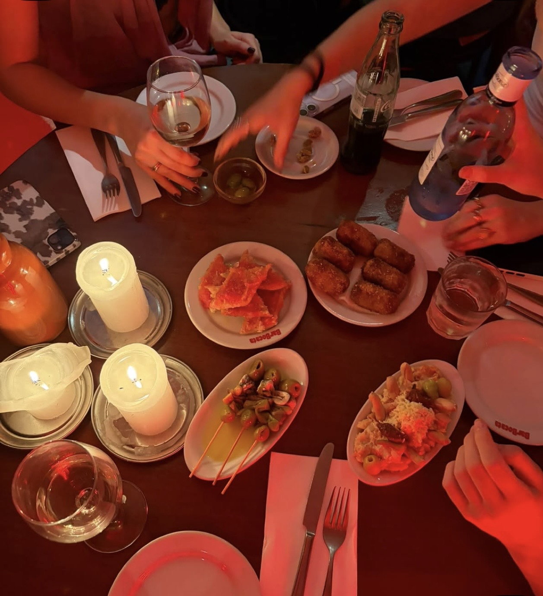
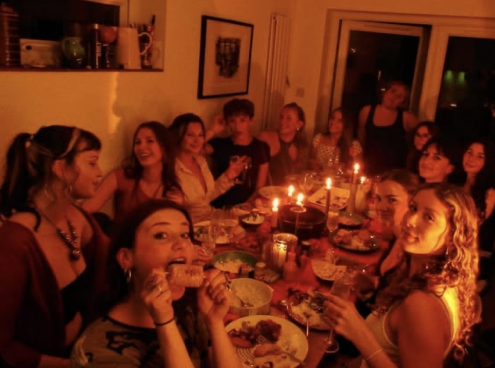
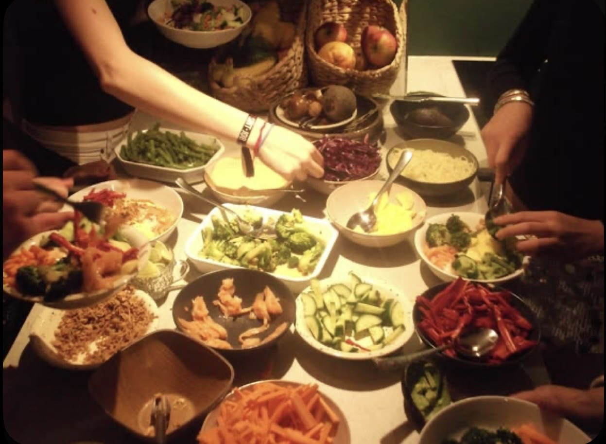
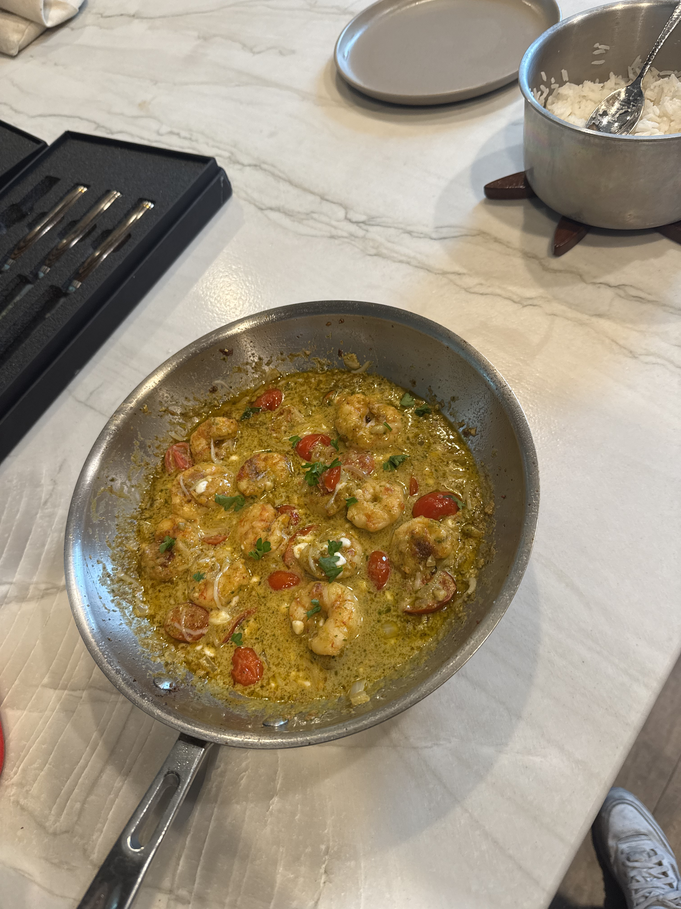

Tapas & Wine Night
A cozy evening featuring Spanish-inspired small plates, olives, and shared dishes. The experience focused on good food, conversation, and a relaxed atmosphere.
Welcome to Addy's Cooking! Explore my passion for food, creative dining experiences, and bringing people together through cooking.

A cozy evening featuring Spanish-inspired small plates, olives, and shared dishes. The experience focused on good food, conversation, and a relaxed atmosphere.

A lively dinner celebration bringing friends together over delicious food. The gathering featured a welcoming table setting and a memorable shared dining experience.

A colorful selection of seasonal vegetables, fresh ingredients, and homemade dishes. Family-style serving encouraged guests to share and enjoy food together.

A flavorful shrimp dish prepared with cherry tomatoes, herbs, and a rich sauce. This dish highlights my interest in fresh ingredients and creative cooking.